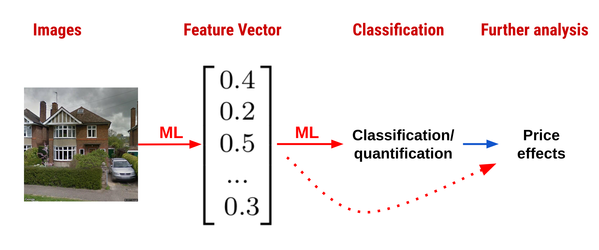

Äussere Werte
Schönheit und Immobilienpreise
Dr. Thies Lindenthal
Department of Land Economy / University of Cambridge
E-mail: htl24@cam.ac.uk / Twitter: @ThiesLindenthal
„sehen“ automatisieren?
Bilderkennung + ML-Klassifizierung + trad. Ökonometrie
